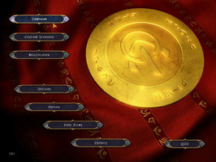
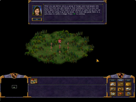

Kohan
Dieser Artikel wurde für die folgenden Ubuntu-Versionen getestet:
Ubuntu 16.04 Xenial Xerus
Zum Verständnis dieses Artikels sind folgende Seiten hilfreich:
Kohan: Immortal Sovereigns  (KIS) ist das erste Spiel der Serie Rund um Kohan. Das Spielziel liegt darin, dass Geheimnis um das untergegangene Reich der unsterblichen Regenten von Kohan zu enträtseln. Hier wird man in die Welt von Khaldun versetzt und schlüpft in die Rolle eines unsterblichen Kohan. Der Multiplayer-Modus für bis zu 8 Spieler im LAN oder über das Internet runden den Spielgenuß ab.
(KIS) ist das erste Spiel der Serie Rund um Kohan. Das Spielziel liegt darin, dass Geheimnis um das untergegangene Reich der unsterblichen Regenten von Kohan zu enträtseln. Hier wird man in die Welt von Khaldun versetzt und schlüpft in die Rolle eines unsterblichen Kohan. Der Multiplayer-Modus für bis zu 8 Spieler im LAN oder über das Internet runden den Spielgenuß ab.
|  |  |
| Menü | Kampagne |
Installation¶
Die Installation des Spiels funktioniert zwar mit dem auf der CD enthaltenen Installer jedoch ist es nicht möglich die Updates einzuspielen. Um dieses Dilemma zu lösen verwendet man die Installationsroutine von liflg.org oder holarse-linuxgaming.de  . Diese Routine installiert das Spiel und bringt es auf den aktuellen Stand. Um es installeren zu können muss sie ggf. ausführbar [2] gemacht werden.
. Diese Routine installiert das Spiel und bringt es auf den aktuellen Stand. Um es installeren zu können muss sie ggf. ausführbar [2] gemacht werden.
Die Installation starten:
./kohan_1.3.1-english_x86.mojo.run
Nach erfolgreicher Installation findet man das Spiel unter "Anwendungen -> Spiele".
Hinweis:
Beim erstem Start erfolgt die Eingabe der Seriennummer, welche man im Handbuch findet.
Demo¶
Eine Demoversion des Spiels kann nach dieser Anleitung installiert werden. Unter sunsite.dk findet man ein Video.
Problemlösung¶
Spiel startet nicht¶
Eventuell genügt es eine andere ausführbare Datei (z.B. kohan.dynamic.sh) zu verwenden.

Infobox¶
| Kohan: Immortal Sovereigns | |
| Genre: | Echtzeitstrategie |
| Sprache: | |
| Veröffentlichung: | 2001 |
| Publisher: | Loki Entertainment Software |
| Systemvoraussetzungen: | Prozessor mind. 600 MHz - mind. 128 MB RAM - mind. 200 MB Festplattenspeicher |
| Medien: | CD (1) |
| Strichcode / EAN / GTIN: | 689524328632 |
| Läuft mit: | nativ |
- Erstellt mit Inyoka
-
 2004 – 2017 ubuntuusers.de • Einige Rechte vorbehalten
2004 – 2017 ubuntuusers.de • Einige Rechte vorbehalten
Lizenz • Kontakt • Datenschutz • Impressum • Serverstatus -
Serverhousing gespendet von